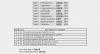

Pseudo-science - giả định giả thuyết - đó là điều mình cho rằng về cách nói ấy của DanRyan . Bản thân mình cũng thích tham khảo giả thuyết , Mỗi 1 người đều có 1 dạng suy nghĩ riêng . Từ đây DanRyan đã chia sẻ về Ennegram và mình rất hứng thú về nó , tuy bất đồng về quan điểm , những vẫn sẽ tôn trọng quan điểm của cậu ta - không có định kiến nhiều về nó ( Tức là : hi vọng bản thân sẽ có thể suy nghĩ hiểu nó theo 1 cách nào đó ) . Mình không xét nét và khó tính Thích đàn Guitar và đọc sách sau giờ làm việc của mình - Ngoài ra còn ngồi hàng giờ trên Internet như thế này ... ! Sở trường là giải toán , thế nên cũng quen với việc chú ý những chi tiết nhỏ . @Thuytien : liệu bạn còn thắc mắt nào không ?
@EvernaloneKZ tui đã tra google, tìm trong đầu những gì tui đã học và biết, chỉ thiếu đi hỏi người khác thui (vì h là 2 h sáng nên tui ko nghĩ mình sẽ làm điều đó) và cậu biết ko ^^, tui tìm thấy từ ""tha hóa" cả cậu với ý nghĩa "biến chất, và sự suy đổi, mất phẩm chất đạo đức " đó ^^. Cậu tìm lại cho tui xem định nghĩa về sự tha hóa, của cậu được ko?? Tui sợ cứ trình độ này chắc tui phải học lại văn quá ^^
@Tiêu : thừa nhận , đáng ra dùng 1 từ đơn giản hơn là Thông cảm . Mình thấy mặt thiếu sót trầm trọng trong lối dùng từ của bản thân rồi ! Từng nhận định "tha hóa" là hình thức của" tha thứ ".
Một hệ thống được xác định dựa trên hành vi (behavior) và cấu trúc (structure). Nói cách khác là một hệ thống phải chỉ ra được hành vi của nó trong các môi trường khác nhau và cấu trúc dẫn đến các hành vi đó. Các hành vi mới thêm vào sẽ bổ sung cho cấu trúc và từ cấu trúc mới có thể tiên đoán, suy luận được các hành vi chưa xảy ra. Nên tìm hiểu theo hướng này. Rất vui nếu bạn @EvernaloneKZ có thể có một topic riêng để trình bày base system của bạn theo hướng trên .
Mình làm bài test Enneagram và được kết quả này:  Tuy nhiên do mình không hiểu nó nói gì cả @@ mình chỉ biết mình thuộc type 6. Vì thế mình mong các bạn giải thích giùm mình nhé. Mình cảm ơn
6-3-5 đây là biểu đồ hành vi Stress của ISTJ Đuôi 1 - 8 - 9 biểu thị những Func Shadow đó là INFP Style 6 : [ Người Trách Nhiệm ] Tham khảo tại đây
@Hung , đầu tiên, rất cảm ơn vì cậu đã cho rằng tui là người tạo nên hoằ bình hay đại loại đó ^^ vì có nhiều người nghĩ rằng ui thích gây sự hơn >.< Nhưng mà vụ mơ lấy chồng thì ko, thực tế là tui mong có người giúp tui xử lý mấy công việc thường ngày họ thui ^^ cậu biế vì sao ko? Vì tui có thói quen lên đến 5,6 h sáng, rồi ngủ đến 1,2 h chiều, sau đó lại lên mạng, rồi ngủ ^^ cứ vậy đó, tui ở nhà ko nấu cơm, ko giặt giũ hay dọn dẹp, rửa bát gì lun, tui còn ko biết đi chợ cơ --> ko làm bao h nên tui rất sợ làm mấy cái này --> mong có người làm hộ mình, cơ mà ko mong là người lạ, cũng ko muốn thuê người à, mà bạn tui thì cũng cần có không gian riêng chứ --> dĩ nhiên cần người sẽ ở bên tui lâu dài và chăm sóc cho tui rùi, ok chưa?? Tiếp là nếu ko tìm được người lý tưởng như vậy à ^^, thì tui mong mua được mấy con robot như vậy, chia việc ra làm --> mong thế giới, khoa học phát triển vì tui ko thích vật vô tri à, vì tội em nó lắm ^^ --> thực tế cái này còn là vì lo nghĩ cho tương lai khoa học nữa ^^, nên nếu bạn muốn biết, tui còn có thể nói tui muốn ra khỏi Trái Đất, làm cho namxnam, nữxnữ đẻ con được, vô sinh cũng được lun, tui cũng rất ưa lưỡng tính, nếu cho biến dị gen cũng hay, tui cũng muốn gặp người ngoài hành tinh, ... ^^ nhiều lắm, nhưng ko phải mơ mộng hão huyền à, cái này là NGHIÊM TÚC đó >.< ---> Thế giới nên thật là phát triển vào, khi đó tui mới thực sự hạnh phúc --> tui cũng mong là nhà khoa học và thêm nữa, là tui cũng rất hâm mộ các nhà khoa học Cuối cùng, cậu hiểu ý tui chưa? ^^
Mình cho rằng không nên định style bằng Enneagram , bởi vì cấu trúc Enneagram nói nhiều vào tâm lý tiềm thức ( hoặc bẩm sinh sinh ra ) , trên thực tế trắc nghiệm Ennegram có trên 50% người test nhận được kết quả thuộc về Style 5 [ Investigator ] - vậy nên người thuộc vào style 5 thì không thể cho rằng người đó thuộc về Style INTP hoặc INTJ được . Style 5 được đề cập nhiều về cơ cấu nhận thức - tra khảo tìm kiếm , suy đoán , dự đoán . Điều này cũng đúng với chức năng khi làm nhiệm vụ của 1 Điều tra viên, thám tử . Nó thiên về chức năng đi tìm sự thật . Ne/Ni : Chức năng đặt ra câu hỏi thiên về sự dự đoán giả thuyết . Những Style 5 dễ dàng nhận thấy những bất hợp lý trong quá trình làm việc / tìm kiếm câu trả lời - nó thiên về chức năng của Ti/Te Ne / Ni / Ti / Te là những Func nhận thức được dùng nhiều đối với người thuộc nhóm INTP & INTJ - Vì thế cũng có thể giải thích tại sao mà INTP & INTJ dễ rơi vào Style 5 khi làm test Ennegram. Câu trả lời tại sao mình lại test ra Style 7 : đơn giản vì theo quan niệm : Tò mò , tìm kiếm là sự đam mê , học hỏi để thỏa mãn những câu hỏi đặt ra trong đầu mình .
@Hung À, quên mất cái vụ hòa bình, tui chắc là do bản thân ko muốn người khác nghĩ rằng tui nghiêng về phía nào quá thui, vì ngay cả trong một mâu thuẫn tưởng chừng đã rõ bên nào sẽ thắng, thì bên còn lại vẫn sẽ có cái "hợp lý" của nó, vì nếu ko nó sẽ ko thể tòn tại cho tới tận thời điểm mâu thuẫn ^^ ít ai ủng hộ một cái vô lý mà, nhỉ?? Còn nữa, tui ko thích nói năng gây bất hòa, giống như là trẻ con hơn đấy, nên tui thích nói thể hiện bản thân ít nhất có phần nào hợp lý hơn là mang thêm cảm tính vào, vì cảm tính như vậy chỉ 1 là gây sự 1 là tìm sự đồng cảm thui ^^, mà tui thì ko thích cả 2 cái đó
lại quên, tui ko có ý nói ai hay thể hiện cảm xúc thì như trên đâu ^^, ý tui là người ngoài nhìn vào như vậy đó, còn thực tế có thể họ chỉ là cảm xúc dạt dào thui ^^ còn khi tui thấy được sự hợp lý của bân thiệt ý, thì tui hay nói lại sự hợp lý đó thui, chứ ko có nghĩ tui đi theo sự vô lý của nó nhé ^^ chỉ là tui hay có đặc điểm dở chứng là thích đi ngược số đông thui -_- kiểu nhiều người nói ghép cái gì đó thì tui bảo tui thấy nó cũng ko đnág ghét ý ^^ nên lúc đó tui có thể nói năng hơi gây sự tý ^^ mà ko có nghĩa là vì thế tui sẽ nói lời "vô lý" quá đâu, chỉ là tui mang thêm nhiều khả năng hơn -> người đó chắc gì đã đáng ghét ^^